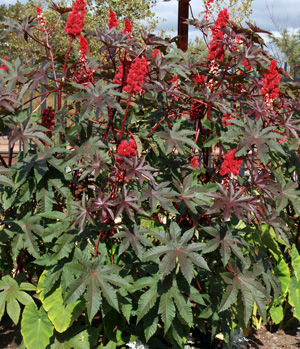
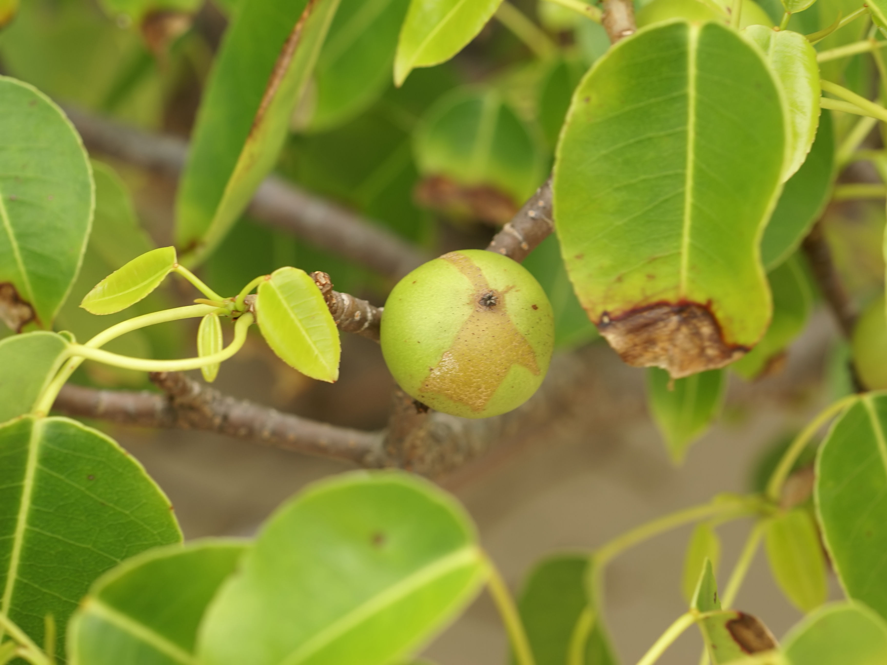
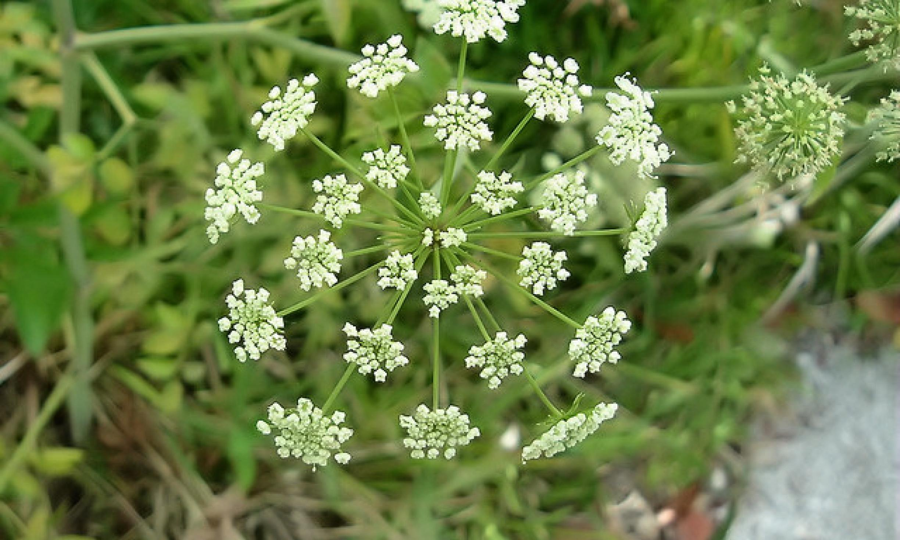
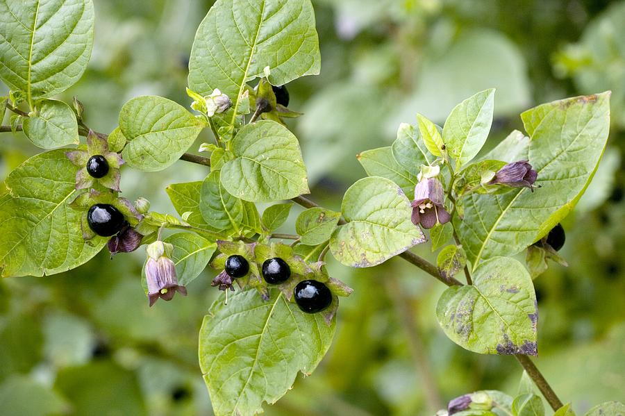
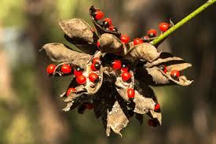
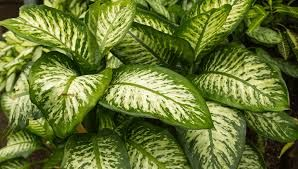

☠️
Toxic Greenery
Not all plants are safe to touch or taste. Some of the world's most innocent-looking greenery can be the most dangerous.
Below are some of the most poisonous plants you should never handle or ingest.
Admire their beauty, but remember: nature can be deadly!

Castor Bean (Ricinus communis) ☠️
The seeds of this plant contain ricin, one of the most deadly toxins known to humans.
- Symptoms: Abdominal pain, vomiting, diarrhea, organ failure.
- Just a few chewed seeds can be fatal.
- Despite toxicity, castor oil (without ricin) is used medicinally.

Manchineel (Hippomane mancinella)
Known as the "Tree of Death", every part of the manchineel is extremely toxic—even standing beneath it in the rain can cause severe burns.
- Symptoms: Blistering skin, severe pain, temporary blindness if sap contacts eyes.
- The fruit, called "beach apple," is highly poisonous if eaten.
- Contact with smoke from burning wood can cause respiratory issues and eye damage.

Water Hemlock (Cicuta)
Considered one of the most poisonous plants in North America, water hemlock contains cicutoxin, which attacks the nervous system.
- Symptoms: Seizures, nausea, vomiting, abdominal pain, and respiratory failure.
- All parts are toxic, especially the roots.
- Even small amounts can be fatal if ingested.

Belladonna (Atropa belladonna)
Known as deadly nightshade, its berries and foliage contain atropine, which can cause hallucinations and death.
- Symptoms: Dilated pupils, dry mouth, confusion, seizures.
- Used in cosmetics in the Renaissance to dilate pupils.
- Small berries are attractive but extremely toxic to children.

Rosary Pea (Abrus precatorius)
Known for its beautiful red seeds, this plant contains abrin, a toxin even more deadly than ricin.
- Symptoms: Nausea, vomiting, liver failure, death.
- Seeds are often used in jewelry, but are fatal if chewed.
- Just one chewed seed can kill an adult.

Dieffenbachia (Dumb Cane)
This common houseplant contains oxalate crystals that can cause intense pain and swelling if chewed.
- Symptoms: Burning, swelling of mouth and throat, difficulty breathing.
- Can cause temporary inability to speak, hence the name "dumb cane".
- Dangerous to pets and children.